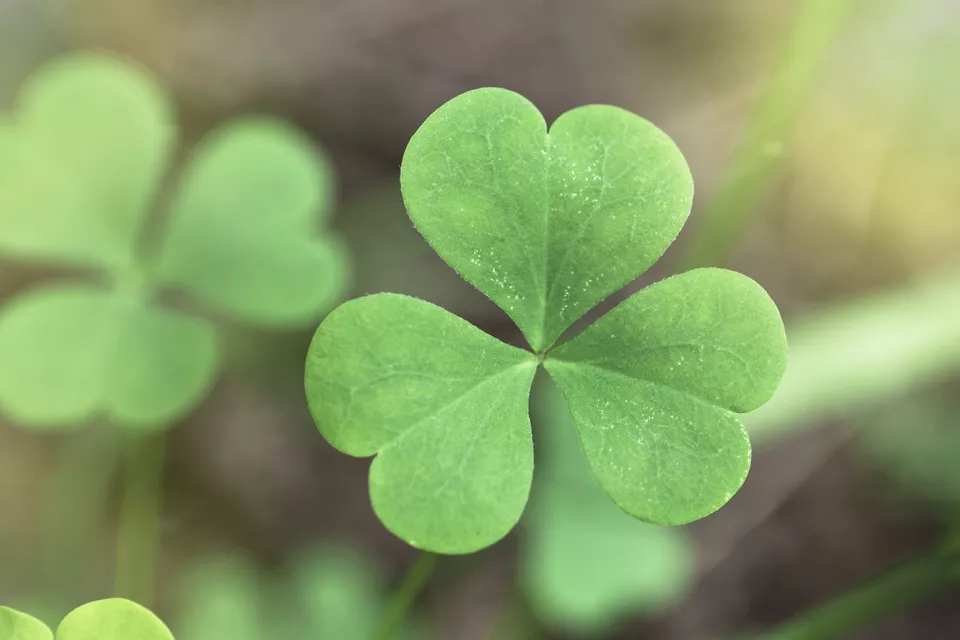
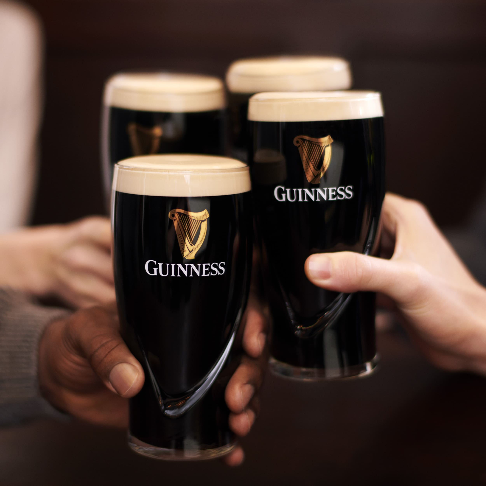
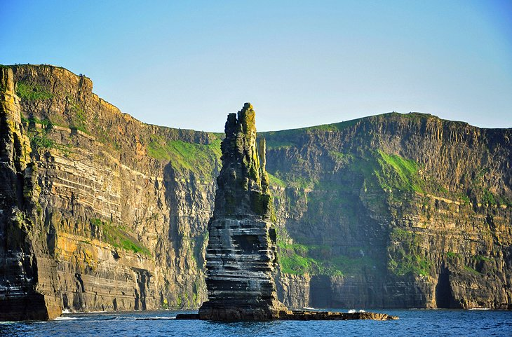

Capital: Dublin
Area: 70,273 km²
Population: 4,977,400
Language: Mostly english and irish
Currency: Euro €
Traditions & Symbols
In Ireland, there is a lot of symbols and traditions !
The Shamrock is one of the most prolific. It represent the holy trinity : the father, the son and the holy ghost.

The Harp is also a strong symbol. It appears on Irish coins but above all it's the mark of the Guiness the most popular Irish beer.
Centaries ago, the Irish were some of the most magnificent harp players.
The Claddagh, a traditional Irish ring whiwh represent two hands clasping a heart and surmounted by a crown.
This is usually a token of friendship or love or worn as a wedding ring.
The Celtic Knot represent the cycle of nature, having no beginning and no end.
The Leprechaun, it's impossible to not talk about this mythical creature. Traditionnally shoe makers,
it is also told that if you catch one you get three wishes and a pot of gold.
The Museum of the Leprechaun in Dublin is an incontournable place for understand all the myths around this creature.
Cooking
First of all, there is the Guiness !
This traditional beer is sold everywhere in Ireland, this a very particular beer rather strong that you can nearly eat.

An unmissible plat is the Irish Beef Stew, which is a plat with beef, carrots, potatoes, onions and very important Guiness.
It is one of the signature meals in Irish pubs served with a pint of Guiness of course.
And for ending I will talk about the Irish coffee.
Be careful while drinking it because it's a strong drink composed of coffee obviously, Irish whiskey, brown sugar and on the top cream.
Important places to visit
Cliffs of Moher
This is Ireland's most visited natural attraction and with good reason, this is a wanderful landscape.
This also the spot where some Harry Potter stage take place

St. Stephen's Green in Dublin
It's a magnific parc very peaceful. Perfect to take a break with friends or family.
Temple Bar in Dublin
It's narrow, cobbled streets still retain all the essence and authenticity of the city and constitue Dublin's largest cultural and leisure center.